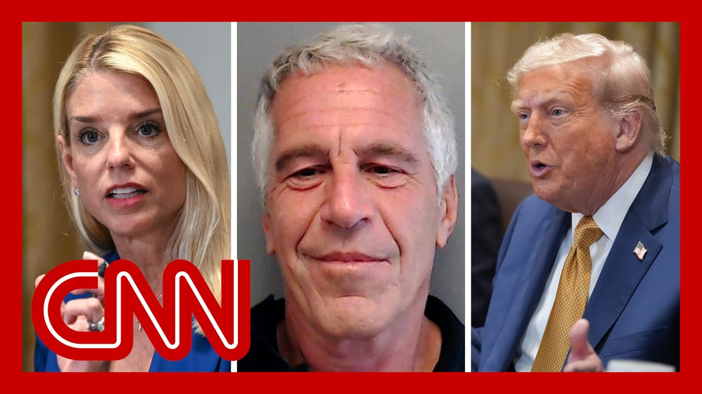

【CNN News 20250724 司法部告知特朗普其名字出现在爱泼斯坦文件中，CNN援引《华尔街日报》】
Summary: The Wall Street Journal reports that the DOJ informed Trump in May his name appeared in Epstein files, which the White House dismisses as "fake news." CNN's legal and congressional correspondents analyze the implications amid ongoing court decisions and GOP pressure to release more documents.
摘要： 《华尔街日报》报道称，司法部于五月告知特朗普其名字出现在爱泼斯坦文件中，白宫斥之为“假新闻”。CNN法律与国会记者结合法院裁决及共和党要求公开文件的压力，分析事件影响。

⏱️ Estimated Reading Time: 14 min.
📚 四级生词 📚 六级生词 📚 雅思生词 📚 托福生词 📚 专八生词 📚 SAT生词 📚 考研生词 📚 GRE生词 📚 高考生词 📚 其它生词
The Wall Street Journal is now reporting that Justice Department officials told President Trump in May that his name was among many names mentioned in the Epstein files.
《华尔街日报》最新报道称，司法部官员于五月告知前总统特朗普，其名字出现在爱泼斯坦文件提及的众多姓名中。
This is something the White House is now labeling as, quote, fake news, end quote.
白宫目前将此称为“假新闻”。
Our panel will be here to weigh in, but we do want to start with CNN chief legal affairs correspondent Paula Reid.
专家小组将参与讨论，但我们首先连线CNN首席法律事务记者保拉·里德。
We also have our chief congressional correspondent Manu Raju on Capitol Hill.
国会山方面由CNN首席国会记者马努·拉朱跟进。
Paula, I want to go first to you and especially this Wall Street Journal headline, which is that the Justice Department told Trump in May that his name is among many in the Epstein files that he was told at this meeting.
保拉，首先请你解读《华尔街日报》头条——司法部在五月会议中告知特朗普其名字出现在爱泼斯坦文件中。
The files contained what officials felt was unverified hearsay about many people, including Trump, who had socialized with Epstein in the past, some of the officials said.
部分官员表示，文件包含官员认为未经证实的传闻，涉及曾与爱泼斯坦交往的特朗普等多人。
One of the officials familiar with the documents said that they contain hundreds of other names.
熟悉文件的一名官员称其中还涉及数百个其他姓名。
We are in the course of of reporting this out, obviously, but what else do we know?
我们仍在跟进报道，目前还有哪些信息？
And it also comes in the context of these court decisions today.
此事背景是今日法院的裁决。
Let's start with the Wall Street Journal reporting.
首先从《华尔街日报》的报道说起。
We have not independently confirmed.
我们尚未独立核实该报道。
We have received some statements from the Justice Department saying, quote, the DOJ and the FBI reviewed the Epstein files and reached the conclusion set out in the July 6th memo.
司法部声明称：“司法部与FBI审查爱泼斯坦文件后得出7月6日备忘录中的结论。
Nothing in the files warranted further investigation or prosecution.
文件内容无需进一步调查或起诉。
We have filed a motion in court to unseal the underlying grand jury transcripts.
我们已向法院申请解封大陪审团笔录。”
We'll get to that in a second.
稍后将讨论此事。
As part of our routine briefing, we made the president aware of the findings.
作为例行简报的一部分，我们向总统通报了调查结果。
So in that statement from the attorney general and deputy attorney general, they are not directly addressing the most significant part of this, which is the reporting that Trump was told.
司法部正副部长的声明未直接回应最关键部分——即特朗普被告知的报道。
He was mentioned multiple times in these files.
他的名字在文件中被多次提及。
Now, there's also a statement from the FBI director, Kash Patel.
FBI局长卡什·帕特尔另发声明称：
It says the memo, released on July 6th, is consistent with a thorough review conducted by the FBI and DOJ.
“7月6日备忘录与FBI及司法部的全面审查结论一致。
The criminal leakers and fake news media tries tirelessly to undermine President Trump with smears, lies.
犯罪泄密者与假新闻媒体不断以诽谤谎言破坏特朗普总统声誉。
And this story is no different.
此事亦不例外。”
I'm reading that because it suggests to me that the FBI director there is calling this story a lie, but that's not actually specifically what he's saying.
该声明似在指责报道不实，但未明确指认。
And I think all this is really important, Kasie, because if we go back to the first Bondi related Epstein controversy, you may remember she held an event to great fanfare at the White House where she handed out binders of what was promised to be new information related to the Epstein investigations on a lot of MAGA aligned influencers were very disappointed, because most of what she handed out was already in the public record.
此事重要性在于回顾邦迪与爱泼斯坦的首场争议——她在白宫高调分发所谓爱泼斯坦调查新资料，但MAGA阵营发现多为公开记录。
But sources at that time told me a lot of the frustration from the White House with Bondi, and not of that was the fact that they didn't redact Trump's name, even though these were records that were already, well known, they were flight logs.
消息人士称白宫对邦迪未隐去特朗普姓名（尽管是公开飞行日志）深感不满。
There was a lot of frustration around Bondi’s handling of that incident.
邦迪对此事的处理引发诸多不满。
So it tracks with what the Wall Street Journal is reporting here, that they would be very sensitive about any mention of Trump's name in subsequent files.
这与《华尔街日报》报道吻合——他们对后续文件中提及特朗普极其敏感。
Now, you also asked about the potential release of grand jury information because we know.
关于大陪审团信息可能公开的提问——
Let me let me pause you just one second there, because I do want to make sure that we get this White House statement on the record as we continue to, to talk about this.
请稍停，我们需要记录白宫声明。
So here was White House Communications Director Steven Cheung responding to this.
白宫通讯主任史蒂文·张回应称：
He says, quote, Of course we're gonna get to that later on in the show, because that's what they were trying to talk about from from the podium today.
“我们稍后将在节目中讨论此事，因今日发布会正涉及该话题。”
But, Paula, it's also worth noting, of course, the Trump Justice Department did ask for these, grand jury, testimony, the grand jury materials to be released continue.
值得注意的是，特朗普执政时的司法部曾要求公开大陪审团材料。
You were talking about what's going on there.
你刚才提到相关进展。
And I think my sort of big picture question for you is, do they actually want those released, or did they know that this is did they go in expecting this to happen?
关键问题在于：他们是否真希望公开，或早预料到此结果？
Well, they want all of this to die down, but that's unlikely to happen any time soon.
他们希望平息事态，但短期内难以实现。
But after the the Fury at following that memo where the Justice Department said they weren't going to release anything else, they had to at least make it appear that they were trying to do something else.
司法部备忘录称不再公开更多文件引发众怒后，他们至少需表现出努力姿态。
And the idea that you're going to unseal grand jury material, that's a long shot, and you really hit one of the first roadblocks today because they're seeking the the unsealing of evidence in multiple grand juries connected to Epstein investigations, both in New York and Florida.
解封大陪审团材料本就不易，今日首遇阻碍——他们申请解封纽约与佛罗里达多场爱泼斯坦相关大陪审团证据。
And a short time ago, a judge in Florida, that she would not release information related to grand juries that were convened in West Palm Beach in 2005 and 2007.
佛罗里达法官刚拒绝公开2005与2007年西棕榈滩大陪审团信息。
So this is the earlier Epstein investigation.
这涉及早期爱泼斯坦调查。
There were also, of course, grand jury records in New York related to the more recent charges against Jeffrey Epstein before he died and Ghislaine Maxwell.
纽约还有爱泼斯坦生前及吉斯莱恩·麦克斯韦尔近期指控相关的大陪审团记录。
But here in Florida, the judge said she would deny this request because the Justice this stuff should be released because of extensive public interest and, quote, transparency to the American public.
但佛罗里达法官认为“公众高度关注”和“对美透明度”不构成解封理由。
But the judge said, look, those don't qualify as exceptions to what is usually the standard.
法官表示这些不符合常规例外标准。
The grand jury material remains sealed.
大陪审团材料仍将保密。
Now, that's not surprising.
这并不意外。
This is always a long shot.
此类申请本就难获批准。
There is a slight glimmer of hope for the Justice Department in New York up there.
司法部在纽约尚存一线希望——
The judge is still looking at this.
法官仍在审议。
He's given the Justice Department until next week to provide more legal arguments for why this should be unsealed.
要求司法部下周前提交更多解封法律依据。
Victims and Maxwell have until August 5th to file their positions on the unsealing.
受害者与麦克斯韦尔需在8月5日前提交立场文件。
Maxwell is expected to oppose this.
麦克斯韦尔预计将反对。
that judge said that they would not allow Maxwell and her attorneys to review this grand jury material.
法官称不会允许麦克斯韦尔及其律师查阅该材料。
But the headline here is, Kasie, No matter what happens with these grand juries, will continue to face questions about why they are not releasing all of the material within their power to release.
关键在于无论大陪审团结果如何，他们仍将面临为何不公开所有可公开材料的质疑。
And this new Wall Street Journal report is just going to continue to amplify those questions.
《华尔街日报》新报道将加剧此类质疑。
And, of course, Manu Raju, people who have questions include, many Republicans on Capitol Hill, or at least enough of them to cause the House speaker quite a few problems.
国会山许多共和党人——至少足以令众议院议长困扰的人数——也提出质疑。
And there's also this, subpoena that just came down for Ghislain Maxwell bringing us up to speed.
此外，刚向吉斯莱恩·麦克斯韦尔发出的传票带来新进展。
Yeah.
是的。
And this is not the only subpoena that could come down here.
这并非唯一可能发出的传票。
Kasie.
凯西。
Yes, the subpoena came down from the House Oversight Committee that came that was pushed by a Republican congressman, Tim Burchett, yesterday.
众议院监督委员会应共和党议员蒂姆·伯切特要求，昨日批准传票。
Ultimately, the House Oversight Committee voted to move ahead with that today, issuing a subpoena asking for a deposition in her prison cell by August 11th.
委员会今日最终投票通过，要求她8月11日前在狱中作证。
Now, there's one matter.
另有一事。
There's a significant move afoot, though, in a separate subcommittee.
某小组委员会正推动重要动议。
If that's part of the larger House Oversight Committee, Republicans appear poised to defy and join with Democrats to subpoena for all of the Epstein files.
若属监督委员会管辖，共和党人可能联合民主党人传调所有爱泼斯坦文件。
That would be a hugely significant move.
此举影响重大。
Now, this vote has not happened yet, but in a key subcommittee that is now considering this measure, Democrats have tried to force a vote to consider the call for a subpoena for all of the Epstein files, as pushed by Congresswoman Summer Lee.
关键小组委员会正审议该措施，民主党人夏默·李推动强制投票传调所有文件。
They need one Republican to vote for it.
需一名共和党人支持。
Congresswoman Nancy Mace of South Carolina just told me moments ago she plans to vote for this measure after getting some changes that she expects to get to redact the names of the victims here.
南卡罗来纳州议员南希·梅斯称将在确保受害者姓名隐去后支持该动议。
But this is what she just told me moments ago, that she plans to vote in favor of this Democratic effort to subpoena for these files.
她表示将支持民主党传调文件的努力。
So I will amend the motion or do my own motion.
“我将修正或自提议案。
and I've requested that the ranking member amend it.
已要求资深委员修正。
So we're negotiating that right now.
正在协商。
I think it's very important.
此事至关重要。
I will be supporting it, but it's very important that we protect victims.
我会支持，但必须保护受害者。”
You'll be supporting the motion for sure.
你确定支持该动议？
Yeah.
是的。
And I'm going to I'm going to amend the motion to protect the identity of the victims.
“我将修正议案以保护受害者身份。
I think that is should be first and foremost as someone who's fought for the so to protect women and kids.
作为长期保护妇女儿童权益者，我认为这应为首要原则。”
And she is part of that group of Republicans who have signed on to a separate effort, the effort by Congressman Thomas Massie, who, to try to force a vote in the full House of Representatives to release all of the files she supports, Mr. Massey's effort on that issue.
她也是支持托马斯·马西议员推动众议院全体投票公开所有文件的共和党人之一。
Now, on the subpoena itself, the chairman of that subcommittee, Casey Clay Higgins, he's a Republican, he does expect enough Republicans would vote with Democrats to move forward on calling for a subpoena here.
小组委员会主席凯西·克莱·希金斯（共和党）预计将有足够共和党人联合民主党人推进传票动议。
So assuming that motion is approved this afternoon, all indications are that it would be approved.
若今日下午动议通过（目前迹象显示会通过）——
Then it would be the House oversight chairman, James Comer, would have to issue that subpoena within probably in a matter of days here.
监督委员会主席詹姆斯·科默需在数日内签发传票。
So a significant movement here just shows you the pressure the president is under.
这些重大动向显示总统面临的压力。
The administration is under from the president's own allies to release more of the Epstein files.
政府正承受来自总统盟友要求公开更多爱泼斯坦文件的压力。
And of course, you're standing out, in the parking lot behind the Capitol, which is the stakeout location, when they are getting out of town, which they are doing a day early because of all the things you just outlined there.
你此刻所在的国会后方停车场是记者蹲守点，议员们因前述事由提前一日离城。
Monty Raju on the hill for us.
国会山现场记者马努·拉朱。
Thank you both.
感谢二位。